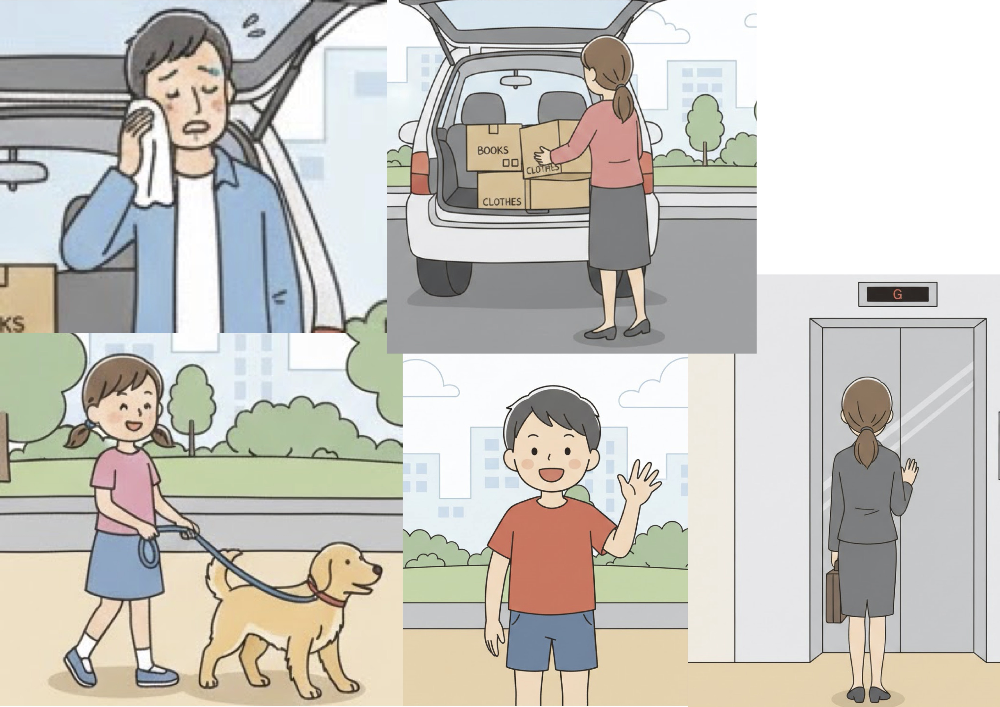
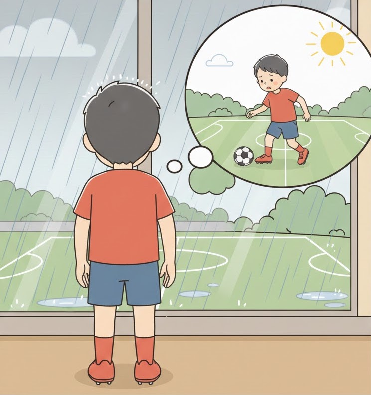

Nowadays, many people participate in volunteer work to help their communities. Some people join activities such as cleaning local parks or helping elderly people. By doing so, they can make their towns better places to live. In the future, it is expected that more people will spend their free time on volunteer activities.
Q: According to the passage, how can people make their towns better places to live?
Answer: By joining activities such as cleaning local parks or helping elderly people.
No. 2: Picture A (Actions)

顔を拭く
車に積む
犬の散歩
手を振る
待つ
1: A man is wiping his face.
2: A woman is putting a box into a car.
3: A girl is walking her dog.
4: A boy is waving his hand.
5: A woman is waiting for the elevator.
No. 3: Picture B (Situation)

Keywords: soccer / rain / cannot play / disappointed
Pattern 1: The boy cannot play soccer because it is raining.
Pattern 2: It is raining, so the boy feels disappointed.
No. 4: Your Opinion
Do you think it is a good idea for students to do volunteer work?
1. Students can learn about their community through these activities.
2. Helping people is a good way to make friends and learn teamwork.
1. Students are very busy with their school work and club activities.
2. They should spend more time studying for their exams.
No. 5: Your Opinion
Q: Would you like to participate in any volunteer activities in your town?
Hint: keep town clean / help elderly / gain experience
1. I would like to help clean the local park to keep my town beautiful.
2. It is a good opportunity to talk with various people in my community.
Hint: busy with study / other plans / no interest
1. I am very busy with my studies and school club, so I don't have enough time.
2. I prefer to spend my free time on my hobbies at home.